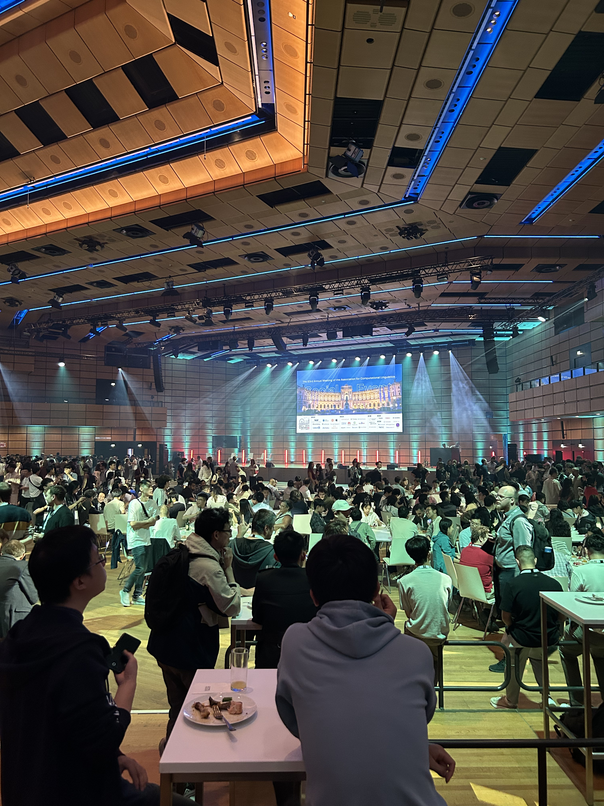
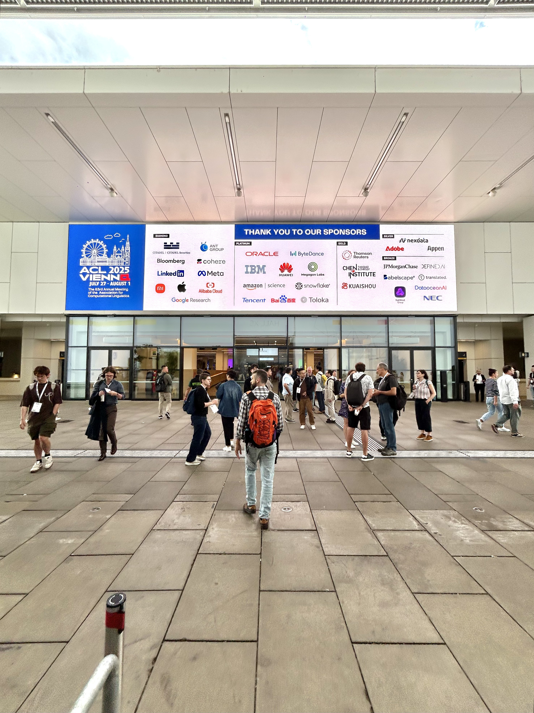
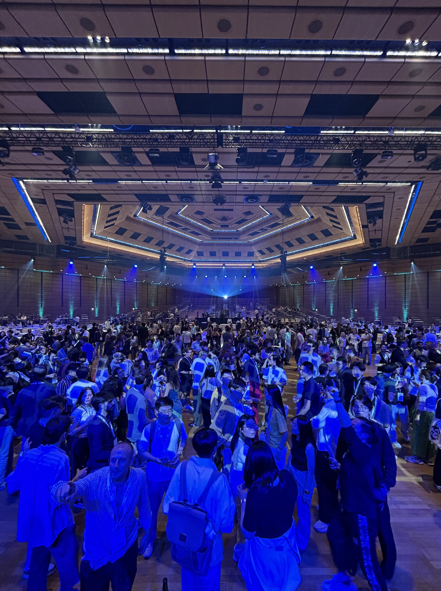
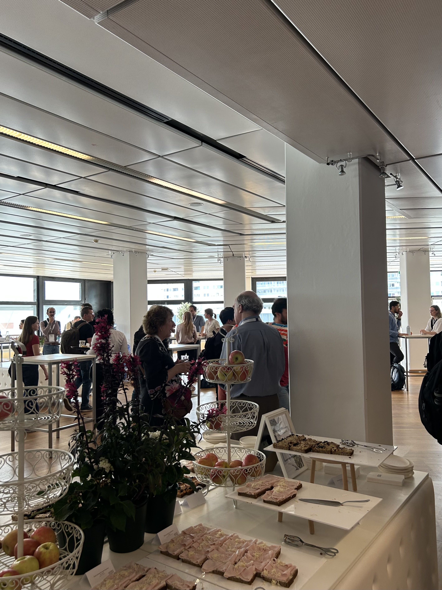
The Association for Computational Linguistics (ACL) is the most prestigious research conference in the world for natural language processing and computational linguistics, consistently ranked #1 in the field. This year, I had the incredible opportunity to fly to Vienna, Austria to attend the 63rd annual ACL conference and present my research alongside my co-author. Being one of only a handful of undergraduates among thousands of PhD candidates and established research scientists was both humbling and surreal. Getting to meet, learn from, and engage with some of the brightest and most innovative minds in AI made this an unparalleled experience, and I’m deeply grateful to the ACL reviewers and organizers for inviting us to present our work.
Our Work
Before I jump into the conference experience, here’s a brief overview of the research that led to our acceptance at ACL. Our paper, Semantic Convergence: Investigating Shared Representations Across Scaled LLMs, explores feature universality in large language models. Specifically, we investigated how semantic concepts are internally represented across models of different scales.
We accomplished this by using sparse autoencoders trained on the residual stream activations of two of Google’s Gemma 2 models (2B and 9B parameters) to extract monosemantic features. We then aligned these features using activation correlation, quantified similarity on a layer-by-layer basis using SVCCA and RSA, and conducted semantic subspace analysis experiments on both single-token and multi-token concepts. Through these experiments, we examined how large language models internally encode and group semantic information.
Contrary to a common assumption in mechanistic interpretability research, we found that multi-token concepts are often encoded in earlier and sometimes middle layers of LLMs, rather than exclusively in later layers or not encoded at all. The paper was authored by myself and five other undergraduate ML enthusiasts, and peer-reviewed by PhD researchers and an industry scientist from Meta. Given how young and rapidly evolving the field of mechanistic interpretability is, especially in the context of LLMs, it was incredibly rewarding to know that our work made a genuine contribution and was recognized by the premier conference in natural language processing and generative AI.
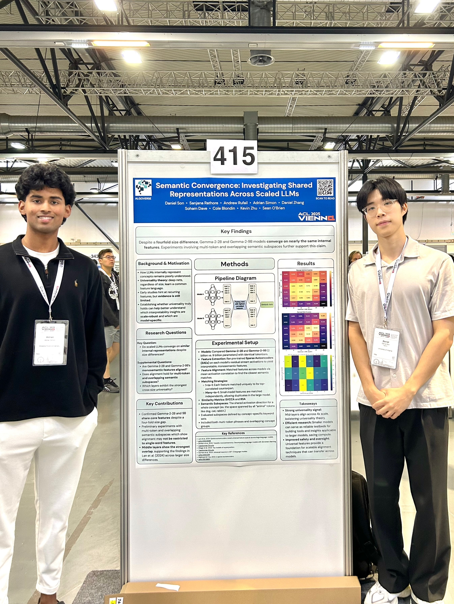
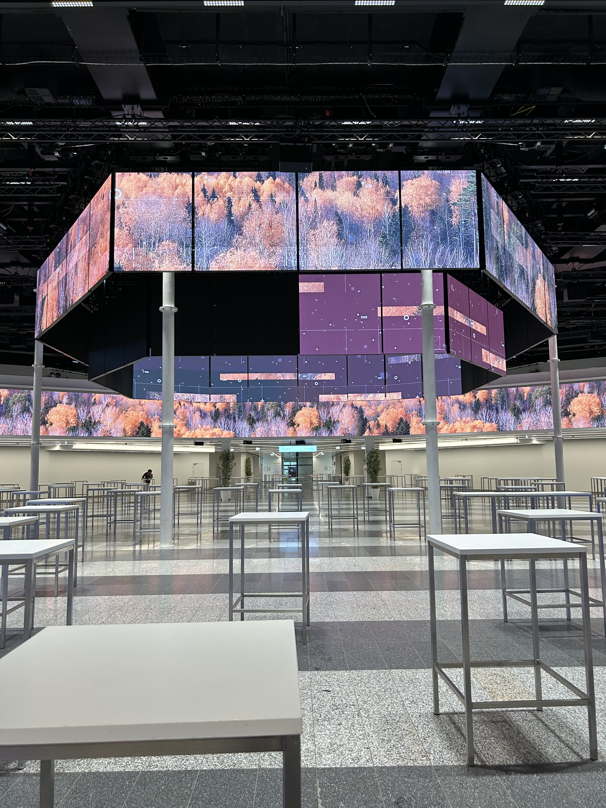
CONFERENCE EXPERIENCE
Touching down in Vienna and immediately seeing ACL billboards across the city was an instant signal that this was going to be a special experience. On the first day, I walked into the massive Austria Center to check in, grab my badge, and meet up with my co-author. Walking past the names of prestigious companies in attendance for the conference like Google, Citadel, Meta, Apple, LinkedIn, Cohere, Amazon, Snowflake, and many others ingrained a clear goal in my mind: network aggressively, make the most of every interaction, and hopefully land an internship at any of those companies. By the second day, I was fully committed to that plan.
Every attendee I met, whether it was at networking events, dinners, or informal meetups; were some of the most impressive and brightest people I’ve ever spoken with. These were individuals actively shaping the future of artificial intelligence and NLP, one paper at a time. Most were PhD candidates leading novel research at prestigious institutions, or established researchers from impactful labs such as OpenAI, Anthropic, Google DeepMind, Meta FAIR, and many more. While talking with researchers, engineers, and recruiters at company booths, I quickly realized just how rare and unusual it was for an undergrad to be accepted to present at ACL. Nearly every conversation began with, “Where are you doing your PhD?” or “Which lab do you work at?”, followed by a slightly awkward explanation that I hadn’t even started my junior year yet.
Although many recruiters were primarily hiring for PhD-level roles, I met several who were incredibly supportive and willing to connect me with recruiters focused on undergraduate opportunities. I spent the rest of the day attending SRW presentations, watching industry talks from major AI labs, and striking up conversations with anyone willing to share their work. Even though I was out of place on paper, I thoroughly enjoyed learning from and exchanging ideas with the researchers advancing the field of natural language processing!
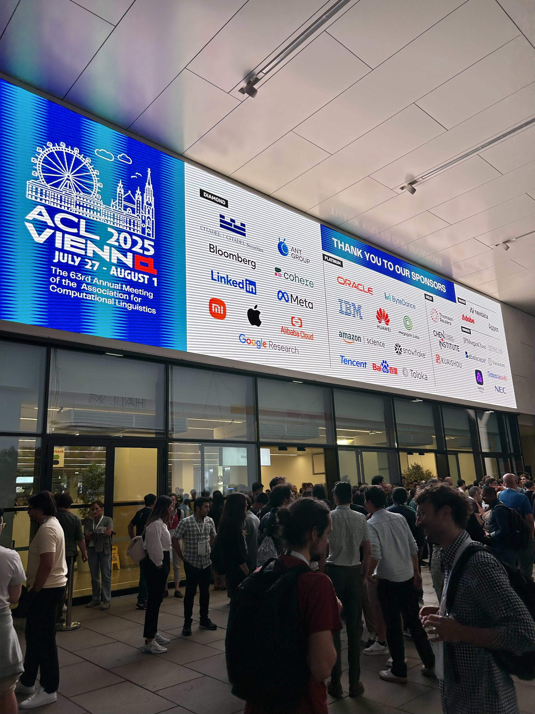
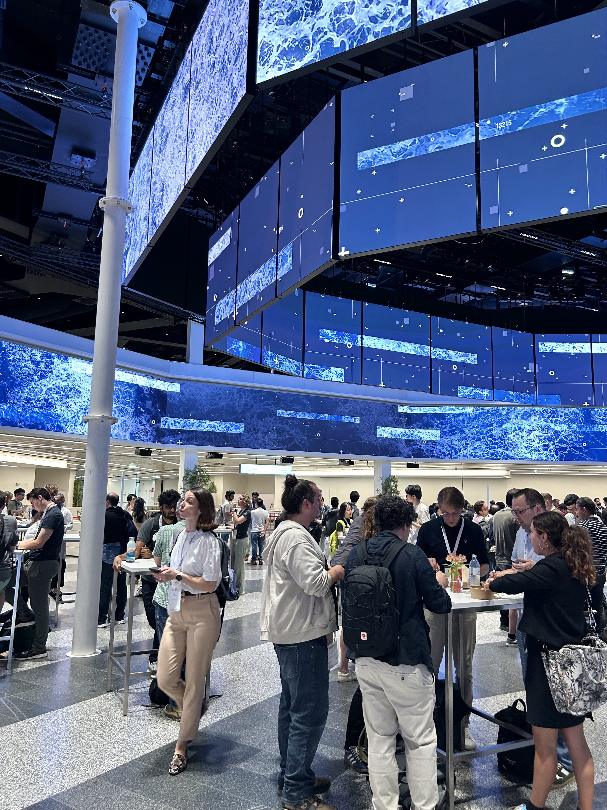
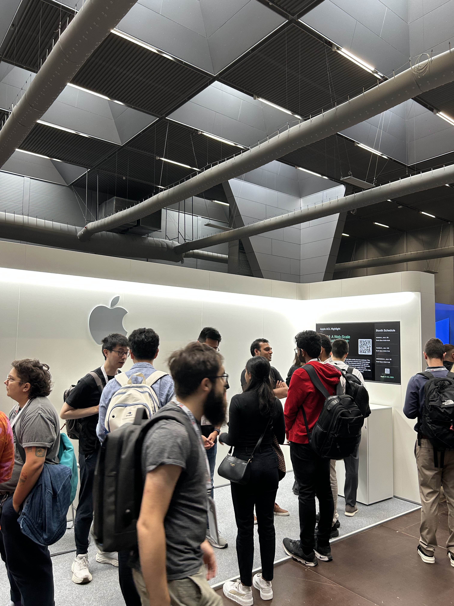
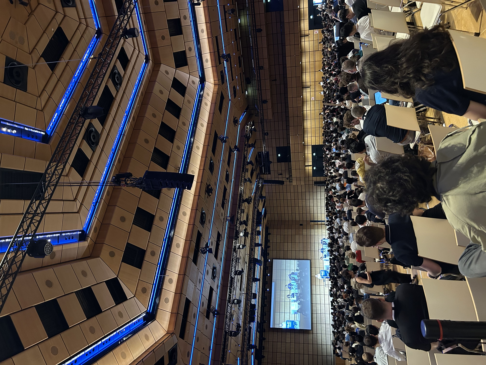
The following day was my presentation day. I spent the morning preparing to present my work by reviewing details of certain experiments, coming up with answers to hypothetical questions that I would likely be asked while presenting, and demolishing a 16oz ribeye at the hotel restaurant before leaving for the conference. The first part of the day mirrored the previous one: networking at company booths, attending meetups, and listening to industry presentations from leading AI labs.
It was then time for our presentation. My co-author and I did some last-minute setup and preparation before beginning our 90 minute presentation. Presenting our work was an amazing experience, but what made it especially rewarding were the questions we received. Researchers stopped by with challenging and thoughtful inquiries that forced us to re-examine certain methodological choices and experimental trade-offs. We discussed constraints imposed by compute limitations and technical complexity, explained how we arrived at our conclusions using quantitative results, and defended findings that challenged common assumptions in LLM interpretability.
It was especially great when experienced interpretability researchers praised our work and offered concrete suggestions for how we could extend or refine it in future iterations. I genuinely enjoyed the debate-style discussions and the intellectual back and forth discussions with our audience. Afterwards, we met the only other undergrad we could find at ACL and took the train to explore downtown Vienna!
Later that evening, we returned from downtown for the conference social event, featuring dinner, drinks, a live orchestra, lively performances, and much more. It was easily the most entertaining part of ACL, as it was a chance for researchers to step away from dense technical discussions and connect on a more personal level. I had the opportunity to chat with influential executives at major companies, researchers who worked on GPT-2, and brilliant members of technical staff pushing the boundaries of LLM development, all while raising a toast with the people shaping the field.
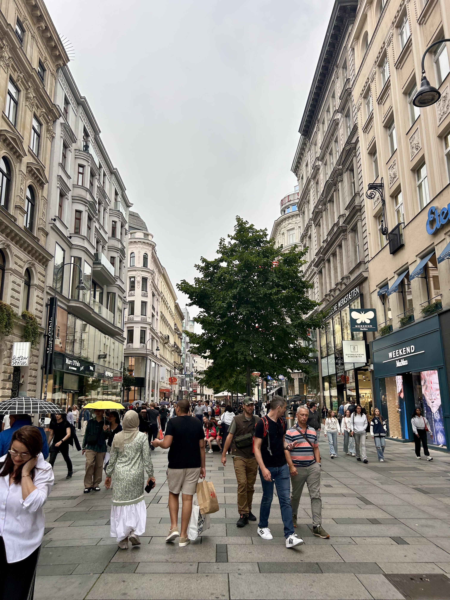
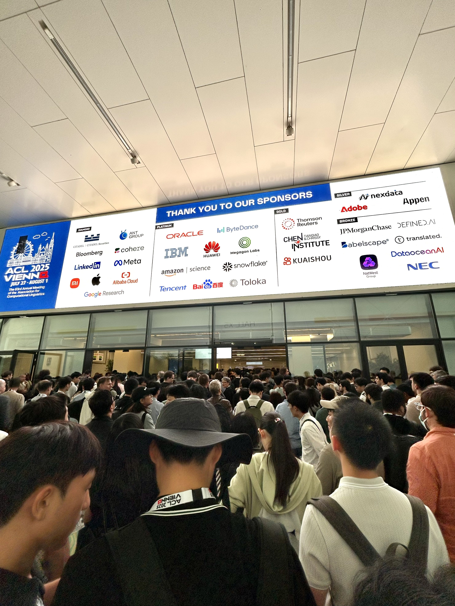
The next day was the final day of the conference. I started the day off attending an interpretability and model analysis session to learn more about work others were doing in my field of research. A paper that really stood out to me during this session was about how Sparse Autoencoders can uncover interpretable latent directions in LLaMA models that control key RAG decisions, specifically whether the model relies on retrieved context versus internal memory and whether it answers or refuses a query. By intervening on these latents, the authors behind the paper demonstrated precise and generalizable control over RAG behavior, with mechanistic analysis reavaling that this control works by reshaping the attention patterns of retrieval heads toward documents or refusal tokens. This incredible paper can be read here!
I spent the remainder of the day attending additional paper presentations and a final networking dinner, where I ran into several attendees who had previously stopped by at our presentation. We continued discussing each other’s work and engaging in friendly, debate-style conversations. The conference concluded with a bittersweet closing ceremony, featuring best paper awards and reflections from the conference organizers and sponsors, marking the end of an unforgettable experience.
Closing Thoughts
ACL 2025 was more than just a conference, it was a defining moment in my academic and professional journey. Being able to contribute to, defend, and openly discuss research alongside some of the leading minds in NLP and AI fundamentally changed how I view the future of how we interact with technology. The conversations, questions, and debates I engaged in pushed me to think more critically about my assumptions, my methodologies, and the broader implications of interpretability research. The conference reinforced the idea that mechanistic interpretability is still a young, rapidly evolving field, and that meaningful progress often comes from challenging what we think we already understand about how large language models work.
Leaving Vienna, I felt a renewed sense of motivation and clarity about what I want to build next. Many of the ideas and approaches I encountered, both from our own work and from the incredible research presented at ACL, directly inspired a new project focused on LLM interpretability that I’m currently developing. My goal is to translate some of these research insights into practical tools that make low-level model internals more transparent and understandable. ACL 2025 didn’t just validate the work I’ve already done; it shaped the direction of what I want to do next, and I’m excited to continue pushing deeper into the field of artificial intelligence, natural language processing, and software development.